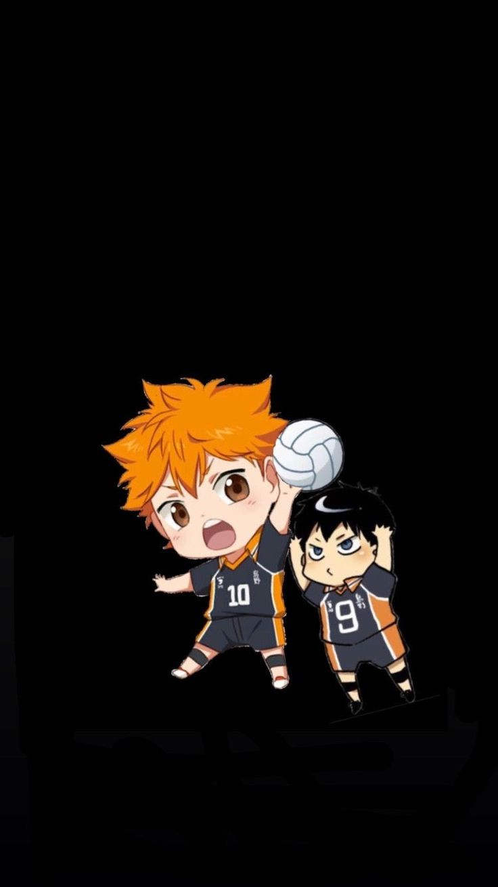

|
Meu nome é Mariana Eduarda, sou uma aluna do Colégio Civíco-MIlitar Vila Guaíra e estou cursando o 2º ano do ensino médio. |
|
Meu nome é Mariana Eduarda, sou uma aluna do Colégio Civíco-MIlitar Vila Guaíra e estou cursando o 2º ano do ensino médio. |


| Comida | Esporte | Hobbie | Música | Filme | Matéria |
|  | |||||
| Fricassê de Frango | Voleibol | Ler |
"Um leitor vive mil vidas antes de morrer. O homem que nunca lê vive apenas uma." -George R.R Martin-